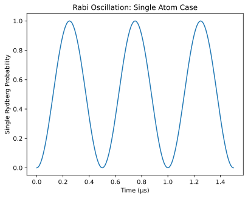
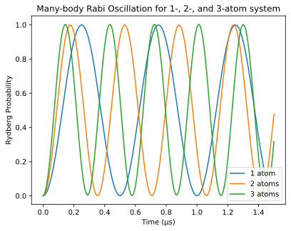
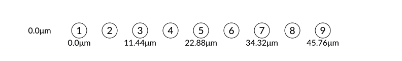
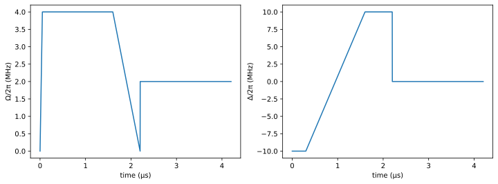
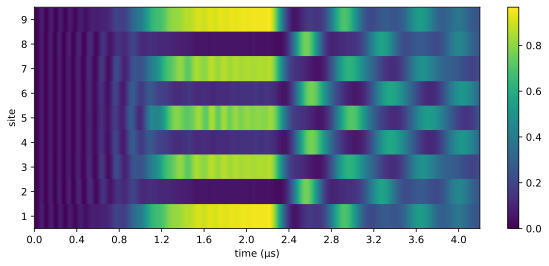
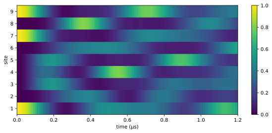

Quantum Scar
Background
The experimental study by H. Bernien et al. (10.1038/nature24622) discovered that if one starts with a particular initial state (e.g. the Neel state), the Rydberg blockade constraint results into persistent revivals of quantum dynamics, in contrast to the expectation of reaching thermalization quickly. Later, theoretical studies (e.g. C. J. Turner et al. (10.1038/s41567-018-0137-5)) reveal that this behavior is due to special eigenstates embedded in the quantum many-body spectrum, and the phenomenon is called quantum many-body scars.
Quantum many-body scars are analogous to the phenomenon of classical scars in single-particle quantum chaos, where scars represent a concentration of some eigenfunctions along the trajectory of classical periodic orbits. Similarly, in the quantum many-body case, the initial Neel state has a large overlap of these specific scar states. Under the time evolution of the Rydberg Hamiltonian, the initial state undergoes the trajectory of periodic quantum orbits. The non-thermal behavior is mainly caused by such non-ergodicity in the Hilbert space.
In this example, we use Bloqade to simulate the evolution of a fully coherent, strongly interacting Rydberg system. We demonstrate the persistent revivals of many-body dynamics with measurements of the Rydberg density and entanglement entropy. For a comprehensive review of quantum many-body scars, we refer readers to the paper M. Serbyn et al. (10.1038/s41567-021-01230-2)
In this tutorial, we provide an example of using Bloqade to simulate quantum many-body scars. To start, we first import the required libraries:
using Bloqade
using PythonCall
using Random
plt = pyimport("matplotlib.pyplot");Many-Body Rabi Oscillations with Rydberg Blockade
We first demonstrate that the strong Rydberg interactions have important effects on the Rabi oscillations of Rydberg atoms. To do so, we consider a system with 1, 2, and 3 atoms. All the atoms are placed within the blockade radius of any other atom (see the Rydberg Blockade tutorial for more details). The atom positions can be created as:
atom1 = generate_sites(ChainLattice(), 1, scale = 3.0)
atom2 = generate_sites(ChainLattice(), 2, scale = 3.0)
atom3 = generate_sites(ChainLattice(), 3, scale = 3.0)
Let's apply a resonant Rabi drive on each atom. The Hamiltonians can be simply constructed by:
h1 = rydberg_h(atom1; Δ = 0, Ω = 2π * 2)
h2 = rydberg_h(atom2; Δ = 0, Ω = 2π * 2)
h3 = rydberg_h(atom3; Δ = 0, Ω = 2π * 2)nqubits: 3
+
├─ [+] ∑ 2π ⋅ 8.627e5.0/|x_i-x_j|^6 n_i n_j
├─ [+] 2π ⋅ ∑ σ^x_i
└─ [-] 2π ⋅ 0.0 ⋅ ∑ n_i
The initial states are chosen such that all atoms start from the ground state:
reg1 = zero_state(1)
reg2 = zero_state(2)
reg3 = zero_state(3)ArrayReg{2, ComplexF64, Array...}
active qubits: 3/3
nlevel: 2We first simulate the dynamics for the single atom's case, where the initial state is quenched under a Hamiltonian with constant Rabi frequency:
total_time = 1.5
clocks = 0.0:1e-2:total_time
prob1 = KrylovEvolution(reg1, clocks, h1)
density1 = zeros(1, length(clocks));
for info in prob1
density1[1, info.step] = rydberg_density(info.reg, 1)
endHere, we use a KrylovEvolution object to simulate the dynamics for a time-independent Hamiltonian. One can also use ODE to simulate the dynamics. For an example, see the Adiabatic Evolution tutorial. The Rydberg density of this atom exhibits Rabi oscillations as a function of time, shown by the plot below:
fig, ax = plt.subplots()
ax.plot(clocks, density1[1, :])
ax.set_xlabel("Time (μs)")
ax.set_ylabel("Single Rydberg Probability")
ax.set_title("Rabi Oscillation: Single Atom Case")
fig
For the case of 2 and 3 atoms, if they are separated far enough with negligible interactions, the total Rydberg excitation densities are simply the sum of the Rydberg density for each atom. However, we show that this is not the case for systems when atoms are close to each other (which results in strong Rydberg interactions). Similar to the 1 atom case, we can simulate the dynamics and get the time-dependent dynamics for each atom:
prob2 = KrylovEvolution(reg2, clocks, h2);
density2 = zeros(2, length(clocks));
for info in prob2
for i in 1:2
density2[i, info.step] = rydberg_density(info.reg, i)
end
end
density2 = sum(density2, dims = 1);
prob3 = KrylovEvolution(reg3, clocks, h3);
density3 = zeros(3, length(clocks));
for info in prob3
for i in 1:3
density3[i, info.step] = rydberg_density(info.reg, i)
end
end
density3 = sum(density3, dims = 1);Because of the Rydberg blockade, the system will undergo many-body Rabi oscillation with the state oscillating between the all 0 state ($\Ket{0 \ldots 0}$) and the W state ($1/\sqrt{2}(\Ket{0 \ldots 0} + \Ket{010 \ldots 0} + \Ket{0 \ldots 1})$), where the Rabi frequency will be enhanced by $\sqrt{N}$, where $N$ is the number of atoms. For more information, please refer to H. Bernien, et al. (10.1038/nature24622). The total Rydberg density for the 1-, 2-, and 3-atom system is plotted below:
fig, ax = plt.subplots()
ax.plot(clocks, density1[1, :])
ax.plot(clocks, density2[1, :])
ax.plot(clocks, density3[1, :])
ax.set_xlabel("Time (μs)")
ax.set_ylabel("Rydberg Probability")
ax.set_title("Many-body Rabi Oscillation for 1-, 2-, and 3-atom system")
ax.legend(["1 atom", "2 atoms", "3 atoms"], loc = "lower right")
fig
From this plot, we can see that the total Rydberg density for 2 (3) atom case does not exceed 1. This is because it is energetically unfavorable to have more than 1 excitation due to the strong Rydberg interactions. In addition, we can see the enhancement of the many-body Rabi frequency. This shows that the interactions play an important role in the system's dynamics.
Below, we show that for a system with 9 atoms where only nearest-neighbor atoms in a chain are within each other's blockade radius, the system can exhibit nontrivial dynamics for certain initial states, the so-called quantum many-body scars.
Quantum Scar
Create the lattice and the Hamiltonian
We first create a 9-atom system with a 1D-chain arrangement, where each atom is separated from its neighbors by 5.72 μm. This results in a nearest-neighbor interaction strength of $2 \pi \times 24$ MHz, which is much larger than the Rabi frequency $\Omega$ specified below. Thus, the nearest-neighbor Rydberg atoms are within the blockade radius and cannot be both excited simultaneously:
nsites = 9
atoms = generate_sites(ChainLattice(), nsites, scale = 5.72)
The waveforms are made up of two parts. For the first part, we use the adiabatic evolution to prepare an ordered Neel state (see the Adiabatic Evolution tutorial for more details):
Δ1 = piecewise_linear(clocks = [0.0, 0.3, 1.6, 2.2], values = 2π * [-10.0, -10.0, 10.0, 10.0]);
Ω1 = piecewise_linear(clocks = [0.0, 0.05, 1.6, 2.2], values = 2π * [0.0, 4.0, 4.0, 0.0]);The second part of the waveform has constant values for the parameters, so we can use constant to construct them:
Ω2 = constant(duration = 2.0, value = 2 * 2π);
Δ2 = constant(duration = 2.0, value = 0);The waveform for the whole evolution can be composed by appending the second part to the first part via append:
Ω_tot = append(Ω1, Ω2);
Δ_tot = append(Δ1, Δ2);
fig, (ax1, ax2) = plt.subplots(ncols = 2, figsize = (12, 4))
Bloqade.plot!(ax1, Ω_tot)
Bloqade.plot!(ax2, Δ_tot)
ax1.set_ylabel("Ω/2π (MHz)")
ax2.set_ylabel("Δ/2π (MHz)")
fig
Note that the total evolution time is 4.2 μs. We then build the Hamiltonian by importing the defined lattice structure and waveforms:
h = rydberg_h(atoms; Δ = Δ_tot, Ω = Ω_tot)nqubits: 9
+
├─ [+] ∑ 2π ⋅ 8.627e5.0/|x_i-x_j|^6 n_i n_j
├─ [+] Ω(t) ⋅ ∑ σ^x_i
└─ [-] Δ(t) ⋅ ∑ n_i
Simulating the Quantum Dynamics
We now simulate the quench dynamics of the Rydberg atom array (initially prepared in the ground state). The initial state can be created by:
reg = zero_state(nsites);We can then simulate the time evolution of the quantum state using an ODE solver:
total_time = 4.2;
prob = SchrodingerProblem(reg, total_time, h);
integrator = init(prob, Vern8());Then, we measure the real-time expectation value of the Rydberg density and entanglement entropy:
entropy = Float64[]
densities = []
for _ in TimeChoiceIterator(integrator, 0.0:1e-3:total_time)
push!(densities, rydberg_density(reg))
rho = density_matrix(reg, (1, 2, 3, 4, 5)) # calculate the reduced density matrix
push!(entropy, von_neumann_entropy(rho)) # compute entropy from the reduced density matrix
endPlotting the Results
We first plot the Rydberg density for each site as a function of time:
clocks = 0:1e-3:total_time
D = hcat(densities...)
fig, ax = plt.subplots(figsize = (10, 4))
shw = ax.imshow(real(D), interpolation = "nearest", aspect = "auto", extent = [0, total_time, 0.5, nsites + 0.5])
ax.set_xlabel("time (μs)")
ax.set_ylabel("site")
ax.set_xticks(0:0.4:total_time)
ax.set_yticks(1:nsites)
bar = fig.colorbar(shw)
fig
We can see that the state evolves to a Neel state after the first part of the pulse (time around 2.2 μs). After that, there are clear oscillations between the two patterns of the Rydberg density, which is a signature of the quantum scar.
We can also plot the entanglement as a function of time:
fig, ax = plt.subplots(figsize = (10, 4))
ax.plot(clocks, entropy)
ax.set_xlabel("time (μs)")
ax.set_ylabel("entanglement entropy")
fig
A Different Initial State
In order to see that the revivals depends strongly on the initial state, we now choose a different initial state, and use the KrylovEvolution solver to simulate the dynamics:
hd = rydberg_h(atoms; Ω = 4π)
total_time = 1.2;
clocks = 0.0:1e-2:total_time;
init_d = product_state(bit"100000101")
prob_d = KrylovEvolution(init_d, clocks, hd)
density_mat_d = zeros(nsites, length(clocks))
for info in prob_d
for i in 1:nsites
density_mat_d[i, info.step] = rydberg_density(info.reg, i)
end
end
fig, ax = plt.subplots(figsize = (10, 4))
shw = ax.imshow(
real(density_mat_d),
interpolation = "nearest",
aspect = "auto",
extent = [0, total_time, 0.5, nsites + 0.5],
)
ax.set_xlabel("time (μs)")
ax.set_ylabel("site")
ax.set_xticks(0:0.2:total_time)
ax.set_yticks(1:nsites)
bar = fig.colorbar(shw)
fig
From this figure, we see that the density does not show long-lived oscillations.
This page was generated using Literate.jl.